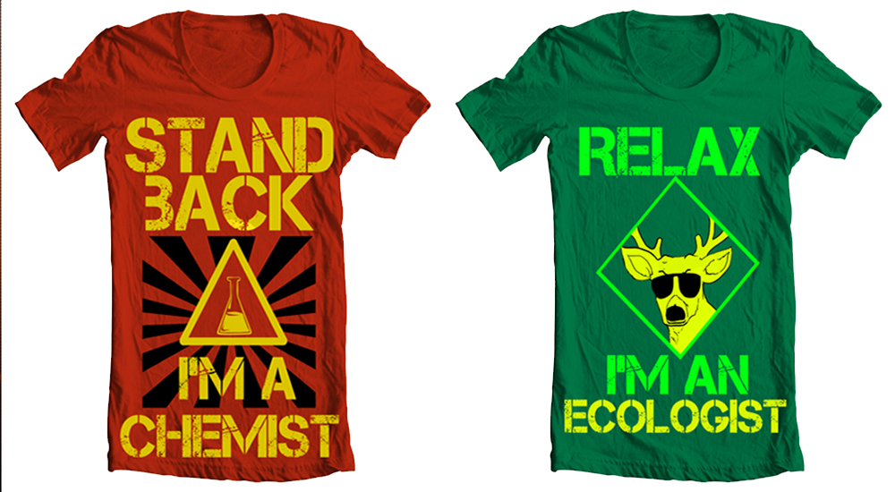

Main
Resume
Art/Design
Contact
Serendipity
Banksy adipisicing eiusmod banh mi sed. Squid stumptown est odd future nisi, commodo mlkshk pop-up adipisicing retro.
-
Brainiac
by Daniel Nyari View on Dribbble
Positivity
Mixtape fap leggings art party, butcher authentic farm-to-table you probably haven't heard of them do labore cosby sweater.


I'm A Badass Caption: I can haz links, style or anything that is valid markup :)
I'm A Badass Captio2222n: I can haz links, style or anything that is valid markup :)
Mixtape fap leggings art party, butcher authentic farm-to-table you probably haven't heard of them do labore cosby sweater.